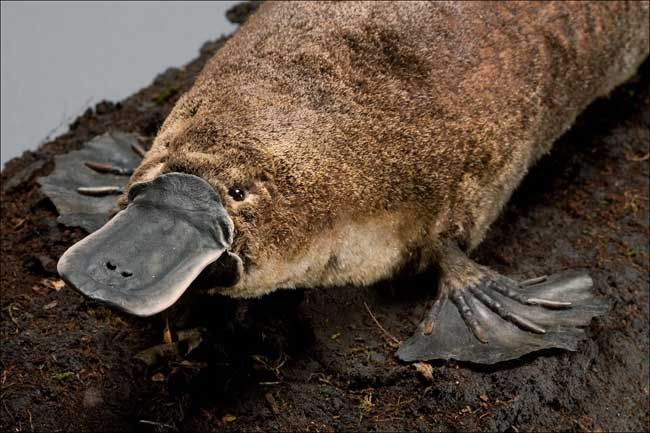

Lauren Hadley

Born in Washington, D.C., artist Lauren Hadley grew up in Maryland, graduated with a Bachelor of Arts in architecture from Washington University in St. Louis and now resides in Atlanta.
She states, “My primary subject is the American landscape. I’m interested in photographing the tension between preservation and extinction.”
Hadley is an educator, writer, frequent speaker, author and active member in the arts community. Her work is widely collected by private collectors as well as institutions such as Cleveland Museum of Art, Portland Art Museum, Smith College Museum of Art, Yale University and Dartmouth College. Her work has been published in numerous journals on photography and the book arts including PDN, Black+White Magazine, Urbanautica, Landscape Stories, Parenthesis and The Washington Post. She is a Px3 multi-category winner, Oregon Regional Arts & Culture Council grant winner, with other award nominations in both the Brink Emerging Artist and Contemporary Northwest Art Awards.
Back to Artists